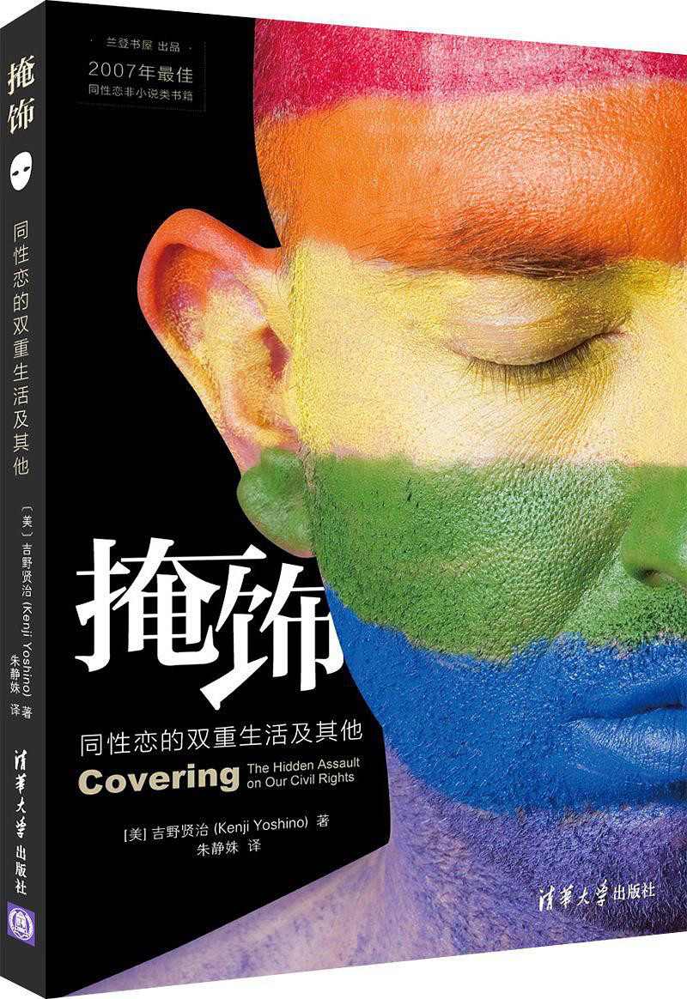

一起来《掩饰》吧 | MOTSS读书会No.2

如果你想了解：
• 今天性少数的生存空间是如何一步步打开的？经历了什么样的斗争过程？
• 当今社会对性少数群体的歧视真的已经不存在了吗？我们是否依然在遭受社会文化的贬抑和排斥，只不过我们已经习惯了它们的存在？
• 作为性少数群体的一员，主动“现身”重要吗？个体的努力真的能改变一群人的生存环境吗？
• 如何在路人指手画脚“同性恋不该这么招摇”的时候有理有据地让ta闭嘴精咽？
• 同性恋运动的盟友是谁？如何与其他民权运动结成联盟？
• 法学界如何回应日益高涨的同性恋权益运动？
又或者，你对这个故事感兴趣：
• 一个出柜的男同性恋，和一个大学的法学教授，当这两个身份组合在一起，会产生什么奇妙的反应？
• 理论思考、政策调整和个人生活，性少数的身份是如何影响了一个人的人生路径和一代人的生存处境的？
那么，你一定可以在这本书里找到答案！


·掩饰：同性恋的双重生活及其他
基本内容
该书结合个人经历和学术观察，作者提出，社会对待同性恋者往往有三个阶段的态度：首先把它当成病，予以治疗；随后，社会不再强迫这个群体改变自己，前提是他们必须在很多场合冒充成“正常”的异性恋；如今，这个群体不再被矫正，很多时候也不需要伪装，但社会仍然要求他们淡化自己的某些特质，保持低调，作者称其为“掩饰”。事实上，每个人都因种种顾虑，需要在不同场合掩饰自己。作者以有色人种和女人为例，进一步说明了掩饰如何阻碍我们充分实现公民权利。最后，作者并提倡一种跳出身份政治的新民权范式，让每个人都能更真实地做自己。
作者介绍
吉野贤治，日裔美国人，出柜同性恋者，现任美国纽约大学法学院宪法学教授。曾就读于哈佛（本科，1991）、牛津（硕士，1993）和耶鲁大学（法学博士，1996）。曾就职于耶鲁法学院（1998-2008），并担任副院长（2005-2006）。除了在核心期刊发表多篇文章，还在《洛杉矶时报》、《纽约时报》和《华盛顿邮报》开有专栏，常参与知名电台和电视节目录制。

如果你想参加...
【阅读要求】
吉野贤治：《掩饰：同性恋的双重生活及其他》，清华大学出版社。
（里面穿插了好多作者亲历的小故事，一口气读完200页简直太容易楽！）
（这次没有提供电子书资源，同志中心有实体书可供借阅。而且买一下也才20元，买不了吃亏买不了上当！当然，也可以向开学趴抽到了这个奖品的朋友借嗷）
【活动流程】
一、分享者发言（60min）
提前确定5位发言者，每人依次发言5-8分钟，每人分享内容结束后可进行3-5分钟的提问和回答。建议发言内容围绕阅读文本展开，同时加入个人对特定问题的延伸思考和经验分享，可根据分享内容需要准备幻灯片和文本材料。
二、小组讨论与自由发言（60min）
根据之前分享者的内容确定几个议题，并分组进行讨论。讨论结束后依次分享讨论结果和阅读感受。
【活动时间】
5月5日（周六）18:30-20:30
【活动地点】
后台回复“幸福在哪里”，即可得到地点。
【报名方式】
报名预收10元押金，到场后返还。活动不允许现场空降，请及时报名。
如果你想在第一个环节发言，请在报名表中勾选相关选项。
因场地限制，本次活动限定15人左右，我们会优先选择自愿分享的报名者。
扫描下方二维码或点击阅读原文填写报名表。